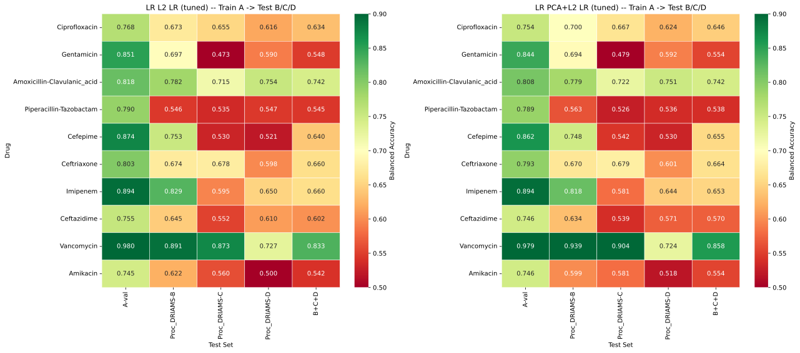
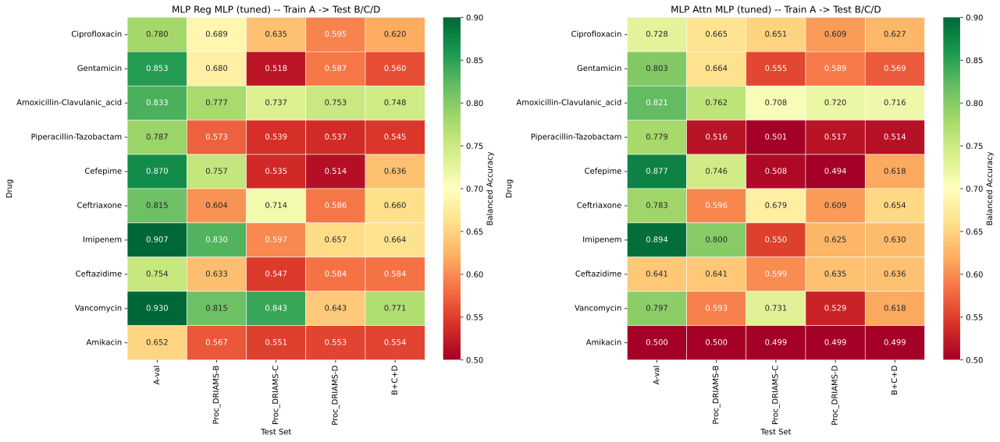

Cross-Site Results
Results are summarised as Balanced Accuracy heatmaps (per drug × target site) and as tabular summaries; AUC-ROC is reported in the summary files and in the best-per-drug chart.
Model Configuration (per drug)
Both LR and MLP are evaluated with per-drug hyperparameters found via internal cross-validation on Site A’s training data. The decision threshold is tuned once on Site A’s validation split and reused unchanged on B/C/D.
Files
lr_cross_site_heatmap.pdf— LR (L2 and PCA+L2) per drug × per sitemlp_cross_site_heatmap.pdf— MLP (Regularised and Attention) per drug × per siteLR-Cross-Site-Summary.txt— Text summary of LR resultsMLP-Cross-Site-Summary.txt— Text summary of MLP resultscross_site_best_per_drug.pdf— Best-performing method per drug
Aggregate Results (mean Balanced Accuracy across the ten drugs)
Method |
A-val |
B |
C |
D |
B+C+D |
Gap |
|---|---|---|---|---|---|---|
L2 LR |
0.828 |
0.711 |
0.617 |
0.611 |
0.641 |
+0.187 |
PCA+L2 LR |
0.821 |
0.714 |
0.622 |
0.609 |
0.643 |
+0.178 |
Regularised MLP |
0.818 |
0.693 |
0.622 |
0.601 |
0.634 |
+0.184 |
Attention MLP |
0.762 |
0.648 |
0.598 |
0.583 |
0.608 |
+0.154 |
Per-Drug Heatmaps


LR Balanced Accuracy per drug (rows) and target (columns): L2 (left) and PCA+L2 (right).


MLP Balanced Accuracy per drug and target: regularised (left) and attention (right).
In both figures the columns are A-val, the three target sites B/C/D and their pooled union B+C+D; cell values are Balanced Accuracy. The heatmaps make two patterns visible: the systematic A-val → cross-site drop, and the drugs that sit at or below chance on specific targets (Piperacillin-Tazobactam and Amikacin almost everywhere, Gentamicin on C, Cefepime on C/D).
Interpretation
Performance drops 15–19 points compared to Aggregated (pooled) training (01/02), depending on the model
Site means (all methods pooled): B 0.692 > C 0.615 > D 0.601. Site D is the largest site by test-set size (e.g. Ciprofloxacin: 9,817 test spectra in D vs 1,982 in B) yet the hardest target, while B — the smallest — transfers best. Difficulty is therefore driven by Domain shift (instrument, calibration, population, species mix), not by sample size
LogisticRegression is on par with, or better than, the MLP cross-site; the attention MLP is unstable (Amikacin A-val 0.500, i.e. no learning) and worst overall
PCA has a mixed effect: it slightly improves the B+C+D mean for LR (0.643 vs 0.641) and helps Vancomycin and Ciprofloxacin, but hurts Ceftazidime
The gap between Cross-site evaluation and Aggregated (pooled) training provides an upper bound on the benefit of pooling data — and therefore an upper bound on what Federated learning can theoretically recover
Per-Drug Patterns
Best transfer: Amoxicillin-Clavulanic acid (0.737, smallest gap 0.083), Vancomycin (0.770 — but only 16–85 resistant isolates per site, so high variance) and Ceftriaxone (0.660)
Worst transfer: Piperacillin-Tazobactam (0.536) and Amikacin (0.537), both near chance; Gentamicin collapses specifically on site C (0.473)
Site-specific failures track prevalence mismatch: Cefepime reaches 0.751 on B but 0.529 on C and 0.514 on D, where resistance prevalence is 2.4% vs 17.4% on A
Caveats
Results come from a single seed (42); no confidence intervals are available
The threshold is tuned on A validation only and reused on all target sites; AUC-ROC is computed by the notebook but not exported as tabular data
B+C+Dis a pooled metric dominated by the larger sites (C, D), not a macro-average across sitesB/C/D test sets are used as-is: they may contain species never seen in A, which is a hard generalisation test but also a confounder
Low-prevalence drugs (Vancomycin, Amikacin) have very few resistant isolates, so their metrics are unstable
Parameter-Selection and Loss-Curve Diagnostics
See Loss-Curve and Parameter-Selection Diagnostics for the per-epoch histories of the 03 models (regularised and attention), the parameter-selection fragility analysis and the evidence that A validation does not predict cross-site transfer. The loss curves for 07’s hyperparameters on A are documented in 07.